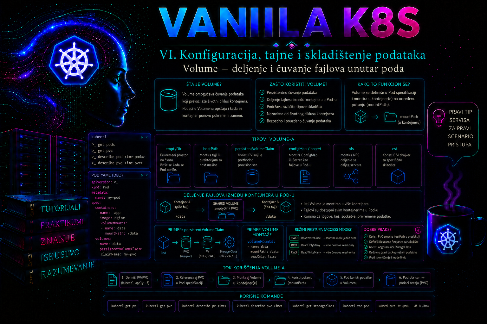

Vanilla Kubernetes

Kontejnerska slika obezbeđuje početni fajl-sistem aplikacije, ali sloj u koji proces kontejnera upisuje podatke nije pouzdano mesto za čuvanje sadržaja koji mora da preživi ponovno pokretanje kontejnera ili koji treba da bude dostupan drugim kontejnerima u istom podu. Kada kubelet ponovo kreira kontejner, novi proces dobija početno stanje iz slike, dok se izmene iz prethodnog zapisivog sloja gube. Kubernetes zato uvodi volume kao deo specifikacije poda i montira ga u jedan ili više kontejnera na tačno definisane putanje.
Volume nije samo „dodatni disk”. To je apstrakcija kojom pod dobija direktorijum čiji izvor, životni ciklus, performanse i bezbednosne osobine zavise od izabranog tipa volumena. Volume može biti privremen prostor na čvoru, memorijski fajl-sistem, direktorijum sa hosta, sadržaj ConfigMap ili Secret objekta, projektovani skup konfiguracionih izvora, trajno skladište zahtevano preko PersistentVolumeClaim objekta ili skladište koje obezbeđuje CSI drajver. Administrator zato ne bira volume samo prema potrebnom kapacitetu, već prema očekivanom životnom ciklusu podataka, načinu pristupa, riziku od gubitka, pravilima raspoređivanja i granicama poverenja.
Zašto kontejnerski fajl-sistem nije dovoljan
Proces unutar kontejnera vidi fajl-sistem sastavljen od slojeva kontejnerske slike i zapisivog sloja konkretne instance kontejnera. Taj zapisivi sloj pripada kontejneru, a ne aplikaciji kao trajnom servisu. Restart procesa unutar istog kontejnera obično ne uklanja njegove fajlove, ali ponovno kreiranje kontejnera može. Do ponovnog kreiranja dolazi prilikom oporavka od greške, promene Pod šablona, rollout procesa, zamene čvora ili drugih redovnih operativnih događaja. Aplikacija koja poslovne podatke čuva samo u zapisivom sloju kontejnera zato zavisi od implementacionog detalja koji Kubernetes ne garantuje kao trajno skladište.
Volume rešava dva različita problema. Prvi je kontinuitet podataka između ponovnih pokretanja kontejnera unutar istog poda. Drugi je deljenje fajlova između kontejnera koji pripadaju istom podu. Ova dva svojstva ne znače automatski da će podaci preživeti brisanje poda. Na primer, emptyDir preživljava ponovno pokretanje pojedinačnog kontejnera, ali se briše kada pod prestane da postoji na čvoru. Za podatke koji moraju da prežive brisanje ili zamenu poda potreban je trajni backend, najčešće korišćen preko PersistentVolumeClaim objekta.
Administrator mora jasno da razdvoji najmanje tri životna ciklusa: život kontejnera, život poda i život poslovnih podataka. Privremeni radni fajlovi mogu pratiti život poda. Konfiguracija može pratiti život odgovarajućeg API objekta. Baza podataka, dokumenti korisnika i drugi poslovno značajni sadržaji moraju imati životni ciklus nezavisan od poda i kontrolisanu strategiju backup-a i oporavka.
Kako se volume definiše i montira
Volume se definiše u polju spec.volumes na nivou poda. Tom definicijom se određuju ime i izvor volumena. Svaki kontejner koji treba da koristi volume dobija zaseban unos u volumeMounts, gde se isto ime povezuje sa putanjom unutar tog kontejnera. Isti volume može biti montiran na različite putanje u različitim kontejnerima. Kubernetes ne pretpostavlja da svi kontejneri u podu moraju da vide svaki volume.
apiVersion: v1
kind: Pod
metadata:
name: primer-pod
namespace: storage-lab
spec:
containers:
- name: aplikacija
image: nginx:1.29-alpine
volumeMounts:
- name: zajednicki-podaci
mountPath: /usr/share/nginx/html
volumes:
- name: zajednicki-podaci
emptyDir: {}
Ime zajednicki-podaci postoji samo unutar specifikacije ovog poda. mountPath mora biti apsolutna putanja. Kada se volume montira preko direktorijuma koji već sadrži fajlove iz kontejnerske slike, sadržaj tog direktorijuma iz slike postaje zaklonjen dok je mount aktivan. To je čest uzrok situacije u kojoj aplikacija prijavljuje da joj nedostaju podrazumevani fajlovi. Kubernetes ih nije izbrisao; mount je prekrio putanju na kojoj su se nalazili.
Polje readOnly: true u volumeMounts ograničava dati mount na čitanje. Drugi kontejner u istom podu može isti volume montirati sa pravom pisanja. Ovakav obrazac je koristan kada pomoćni kontejner generiše sadržaj, a aplikacioni kontejner treba samo da ga servira. Međutim, read-only mount nije zamena za odgovarajuća Unix prava, bezbednosni kontekst i kontrolu izvora volumena.
emptyDir kao privremeni prostor poda
Kubernetes kreira emptyDir kada se pod dodeli čvoru. Na početku je prazan, a svi kontejneri u podu mogu da ga koriste ako im je montiran. Podaci ostaju dostupni kada se pojedinačni kontejner prekine i ponovo pokrene, jer volume pripada podu. Kada se pod ukloni sa čvora, sadržaj emptyDir volumena se briše. To važi i kada kontroler napravi zamenski pod sa istim nazivom aplikacije: novi pod dobija novi prazan volume.
Podrazumevani emptyDir koristi medijum kojim raspolaže kubelet na čvoru. U zavisnosti od konfiguracije čvora, to može biti lokalni disk, SSD ili drugi fajl-sistem na kome se nalazi kubelet direktorijum. Opcija medium: Memory koristi tmpfs. Memorijska varijanta je brza i ne upisuje sadržaj na disk, ali zauzeti prostor ulazi u obračun memorije kontejnera koji upisuje podatke. Nekontrolisan rast može izazvati memorijski pritisak ili OOM događaj.
volumes:
- name: radni-prostor
emptyDir:
sizeLimit: 1Gi
- name: privremeni-kljucevi
emptyDir:
medium: Memory
sizeLimit: 64Mi
sizeLimit postavlja gornju granicu samog emptyDir volumena, ali administrator ne sme da ga posmatra kao zamenu za praćenje kapaciteta čvora i zahteve za ephemeral-storage resursom. Disk-backed emptyDir, zapisivi slojevi kontejnera i node-level kontejnerski logovi zajedno ulaze u lokalnu ephemeral-storage potrošnju poda. Ako drugi potrošači popune isti node fajl-sistem, volume može ostati bez prostora i pre svog sizeLimit. Kada kubelet podržano meri lokalno privremeno skladište, prekoračenje zbirnog limita može dovesti do evikcije poda; pri nedostatku prostora nastaju i DiskPressure signali. Tmpfs emptyDir se, nasuprot tome, obračunava kao memorija kontejnera koji je upisao stranice, a ne kao lokalni ephemeral-storage. U produkciji je zato važno postaviti odgovarajuće zahteve i limite, pratiti slobodan prostor i memoriju čvorova i ograničiti aplikacije koje mogu nekontrolisano da generišu logove, keš ili privremene fajlove.
Tipične upotrebe emptyDir volumena jesu deljenje generisanog sadržaja između init i glavnog kontejnera, razmena fajlova između aplikacionog i pomoćnog kontejnera, radni direktorijum za obradu podataka, lokalni keš koji se može ponovo izgraditi i privremeni prostor za sortiranje ili dekompresiju. Nije odgovarajući za bazu podataka, jedinu kopiju korisničkih dokumenata, audit zapise koji moraju da se čuvaju ili bilo koji sadržaj čiji bi gubitak pri zameni poda predstavljao incident.
Deljenje podataka između kontejnera u istom podu
Kontejneri u istom podu dele mrežni namespace, ali ne dele automatski svoje korenske fajl-sisteme. Volume je kontrolisan način da im se omogući zajednički pristup određenom sadržaju. Klasičan obrazac koristi init kontejner koji pripremi statičke fajlove, konfiguraciju ili strukturu direktorijuma, nakon čega glavni kontejner koristi rezultat. Drugi obrazac koristi sidecar koji čita log ili rezultat rada glavne aplikacije i šalje ga u udaljeni sistem.
Deljenje volumena ne obezbeđuje zaključavanje fajlova, transakcionu konzistentnost niti koordinaciju procesa. Ako dva kontejnera istovremeno menjaju isti fajl, aplikacije moraju koristiti atomske operacije, zaključavanje ili drugi protokol. Kubernetes obezbeđuje zajedničku putanju, ali ne rešava konkurentni pristup sadržaju. Za razmenu poruka sa zahtevima za redosled, potvrdu prijema i pouzdanu isporuku često je prikladniji mrežni servis ili broker poruka.
Važno je i pravilno upravljanje vlasništvom. Kontejner koji radi kao korisnik UID 1000 možda neće moći da upisuje u direktorijum koji pripada root korisniku. Pod-level securityContext može definisati runAsUser, runAsGroup i fsGroup. Kada tip volumena i CSI drajver podržavaju ovu obradu, kubelet prilagođava grupno vlasništvo i prava tako da procesi iz navedene dopunske grupe mogu pristupati mount-u.
securityContext:
runAsNonRoot: true
runAsUser: 1000
runAsGroup: 3000
fsGroup: 2000
fsGroupChangePolicy: OnRootMismatch
seccompProfile:
type: RuntimeDefault
fsGroupChangePolicy: OnRootMismatch može smanjiti vreme montiranja velikog podržanog volumena jer kubelet ne mora uvek rekurzivno menjati vlasništvo svih fajlova. Međutim, ovo polje nema efekta na ephemeral tipove kao što su emptyDir, ConfigMap i Secret. Kada CSI drajver oglašava sposobnost VOLUME_MOUNT_GROUP, obradu fsGroup preuzima drajver i fsGroupChangePolicy se takođe ne primenjuje. Administrator mora proveriti dokumentaciju drajvera i efektivna prava na konkretnoj platformi, naročito kod trajnih volumena sa velikim brojem fajlova.
hostPath i granica poverenja prema čvoru
hostPath montira fajl ili direktorijum sa čvora u pod. Time workload dobija direktan pristup delu host fajl-sistema, pa greška ili kompromitacija kontejnera može uticati na čvor. Sadržaj se razlikuje između čvorova, pod postaje vezan za lokalnu topologiju, a raspoređivanje na drugi čvor može dati potpuno drugačije podatke ili izazvati neuspeh. Kubernetes ne obračunava hostPath potrošnju kao podov ephemeral-storage, pa njen rast zahteva zaseban node monitoring.
Pod Security Standards na nivou Restricted zabranjuju hostPath. Uobičajene poslovne aplikacije zato ne treba da ga koriste. Opravdane upotrebe uglavnom pripadaju pažljivo kontrolisanim sistemskim komponentama, kao što su agenti za nadzor čvora, bezbednosni senzori ili infrastrukturni DaemonSet workload-i kojima je pristup određenoj host putanji suštinski potreban. I tada mount treba ograničiti na najmanju moguću putanju, postaviti readOnly: true gde god je moguće i koristiti poseban namespace, ServiceAccount, admission pravila i proces odobravanja.
volumes:
- name: host-logovi
hostPath:
path: /var/log
type: Directory
containers:
- name: agent
volumeMounts:
- name: host-logovi
mountPath: /host/var/log
readOnly: true
Polje type proverava očekivani tip host objekta. Vrednosti kao što su Directory, File, Socket, BlockDevice i njihove varijante koje mogu kreirati objekat pomažu da se greška u putanji otkrije pre pokretanja kontejnera. Kreiranje host direktorijuma iz manifesta ipak treba izbegavati bez jasne operativne potrebe, jer kubelet može napraviti objekat sa vlasništvom i pravima koja aplikaciji ne odgovaraju.
ConfigMap, Secret i projected volumeni
ConfigMap i Secret mogu se izložiti kao fajlovi preko volumena. Njihova svrha nije skladištenje proizvoljnih aplikacionih podataka, već kontrolisana distribucija konfiguracije i osetljivih vrednosti. Kubelet periodično osvežava sadržaj montiranih objekata, ali promena nije trenutna. Aplikacija mora biti sposobna da ponovo učita fajlove ili se pod mora kontrolisano ponovo pokrenuti. Mount izveden pomoću subPath ne dobija automatska ažuriranja ConfigMap ili Secret sadržaja.
projected volume omogućava da se više izvora prikaže u jednom direktorijumu. Kubernetes 1.36 dokumentuje izvore configMap, secret, downwardAPI, serviceAccountToken, clusterTrustBundle i podCertificate. Prva četiri su uobičajena i stabilna osnova. U verziji 1.36 clusterTrustBundle projekcija je beta, ali podrazumevano isključena i zahteva odgovarajući API resurs, runtime konfiguraciju API servera i feature gate; podCertificate je takođe beta i podrazumevano isključen, uz sopstveni API resurs i feature gate. Zato manifest koji koristi ove novije izvore nije prenosiv bez prethodne provere verzije i konfiguracije klastera. Svi izvori projekcije moraju pripadati istom namespace-u kao pod kada su namespace-scoped.
volumes:
- name: runtime-konfiguracija
projected:
defaultMode: 0440
sources:
- configMap:
name: web-konfiguracija
items:
- key: app.properties
path: app.properties
- secret:
name: web-tls
items:
- key: tls.crt
path: tls/tls.crt
- key: tls.key
path: tls/tls.key
Administrator mora proveriti kolizije putanja: dva izvora ne smeju projektovati različit sadržaj na istu ciljnu putanju. Potrebno je kontrolisati i režime pristupa. YAML brojeve poput 0440 treba koristiti pažljivo, naročito kada manifest prolazi kroz alate koji menjaju numerički format. Efektivna prava treba proveriti unutar pokrenutog kontejnera komandom stat, a ne samo čitanjem manifesta.
subPath, prekrivanje direktorijuma i ažuriranje sadržaja
Kada aplikacija treba da dobije samo jedan fajl iz volumena, subPath omogućava montiranje poddirektorijuma ili pojedinačnog fajla bez prekrivanja celog ciljnog direktorijuma. To je korisno za nasleđene aplikacije koje očekuju konfiguraciju na fiksnoj putanji u direktorijumu sa drugim fajlovima.
volumeMounts:
- name: konfiguracija
mountPath: /etc/webserver/app.conf
subPath: app.conf
readOnly: true
Ovaj pristup ima važnu operativnu posledicu: ConfigMap ili Secret montiran preko subPath neće dobijati automatske izmene izvornog objekta. Za promenu je potreban restart ili rollout workload-a. Administrator mora ovu činjenicu evidentirati u proceduri promene, jer samo uspešan kubectl apply nad ConfigMap objektom ne znači da proces koristi novu vrednost.
subPathExpr omogućava formiranje podputanje pomoću promenljivih okruženja, ali ne treba ga koristiti za nekontrolisani korisnički unos. Putanje moraju biti predvidljive i proverene. Kod složenih mount obrazaca posebno je važno testirati ponašanje na podržanoj Kubernetes verziji i pratiti bezbednosna ažuriranja kubelet-a i kontejnerskog runtime-a.
Privremeni i trajni volumeni
Volume definisan u podu ne znači nužno da je sadržaj privremen. persistentVolumeClaim izvor povezuje pod sa PVC objektom, koji zatim zahteva odgovarajući PersistentVolume ili dinamički provisioned storage. Takav sadržaj može preživeti brisanje poda, ali stvarna trajnost zavisi od StorageClass politike, CSI drajvera, fizičkog storage sistema, reclaim politike, snapshot i backup procedura.
Generički ephemeral volume takođe može koristiti CSI i dinamičko provisioning ponašanje, ali njegov PVC prati životni ciklus poda. Takav model je koristan kada je workload-u potreban izolovan storage sa osobinama pravog storage sistema, ali sadržaj nije potreban nakon uklanjanja poda. Administrator mora razlikovati ephemeral volume od emptyDir: oba mogu pratiti pod, ali mogu imati potpuno različit backend, kapacitet, topologiju i performanse.
Ova lekcija se usredsređuje na volume kao deo poda i deljenje fajlova. Projektovanje trajnog skladišta, izbor access mode-a, StorageClass, reclaim politike, CSI snapshot-a i backup strategije zahteva zasebnu analizu. Najvažnija granica je jasna: kada gubitak poda ne sme izazvati gubitak podataka, emptyDir nije prihvatljivo rešenje.
Provera stanja i dijagnostika
Prva provera je deklarativno stanje poda. Komanda kubectl describe pod prikazuje definisane volumene, mount-ove, događaje i razlog eventualnog neuspeha. Greške kao što su nepostojeći ConfigMap, neuspešan mount, nepravilna hostPath putanja ili odbijanje od strane admission politike najčešće se vide u sekciji Events.
kubectl -n storage-lab get pod shared-web -o wide
kubectl -n storage-lab describe pod shared-web
kubectl -n storage-lab get events \
--field-selector involvedObject.name=shared-web \
--sort-by=.metadata.creationTimestamp
Kada je pod pokrenut, proverava se efektivno stanje unutar svakog kontejnera: da li mount postoji, koji je tip fajl-sistema, ko je vlasnik, koja su prava, koliko prostora je zauzeto i da li je očekivani sadržaj vidljiv. Ne treba pretpostaviti da uspešan status Running potvrđuje funkcionalnost volumena. Proces može raditi, ali pisati u pogrešan direktorijum, koristiti zaklonjene fajlove ili nemati dozvolu za upis.
kubectl -n storage-lab exec shared-web -c writer -- \
sh -c 'id; mount | grep /shared; df -h /shared; ls -la /shared'
kubectl -n storage-lab exec shared-web -c web -- \
sh -c 'id; stat -c "%U %G %a %n" /usr/share/nginx/html'
Za neuspeh mount-a relevantni su kubelet logovi na čvoru. Na systemd sistemima proveravaju se pomoću journalctl -u kubelet. Za CSI volumene dodatno se proveravaju logovi odgovarajućih node i controller plugin podova u sistemskom namespace-u. Pristup čvoru i infrastrukturnim logovima zahteva viša ovlašćenja i treba ga koristiti tek nakon provere API događaja, manifesta i stanja aplikacionog poda.
Integrisani praktikum: zajednički sadržaj između init, writer i web kontejnera
Poslovni i tehnički kontekst. Interni portal treba da servira HTML izveštaj koji se generiše pri pokretanju poda, dok pomoćni proces periodično upisuje statusni fajl. Sadržaj nema poslovnu vrednost nakon zamene poda i može se ponovo generisati, pa trajni storage nije potreban. Pod mora raditi bez root privilegija, web kontejner sme samo da čita sadržaj, a writer kontejner jedini sme da ga menja.
Cilj. U namespace-u storage-lab implementirati pod shared-web sa emptyDir volumenom shared-content. Init kontejner pravi početnu stranicu, writer upisuje vreme ažuriranja u zajednički fajl, a nginx ga servira preko porta 8080. Potrebno je dokazati da podaci preživljavaju restart writer kontejnera, ali ne i brisanje celog poda.
Referentno okruženje i preduslovi. Koristi se Linux Kubernetes klaster sa dostupnim kubectl alatom i podrškom za slike busybox:1.37 i nginx:1.29-alpine. Korisnik mora imati pravo da kreira, čita, briše i izvršava komande u podovima u namespace-u storage-lab, kao i pravo da čita događaje. Nisu potrebna cluster-admin prava, pristup čvorovima niti hostPath mount.
-
Proveriti identitet, kontekst i postojeće stanje.
Pre promene administrator mora potvrditi klaster i ovlašćenja da ne bi kreirao workload u pogrešnom okruženju. Provera
auth can-ipotvrđuje samo RBAC odluku za konkretan zahtev; admission politike i kvote i dalje mogu odbiti objekat.
Validacija: Aktivni kontekst mora odgovarati odobrenom laboratorijskom klasteru. Za rad sa podovima i događajima očekuje sekubectl config current-context kubectl auth can-i create namespaces kubectl auth can-i create pods -n storage-lab kubectl auth can-i get events -n storage-lab kubectl get namespace storage-lab --ignore-not-found kubectl -n storage-lab get pod shared-web --ignore-not-foundyes. Ako namespace ne postoji, njegovo kreiranje može izvršiti samo korisnik sa odgovarajućim pravom; u produkciji namespace obično priprema platformski tim. -
Kreirati izolovani namespace.
Ako prethodna provera pokaže da namespace ne postoji i korisnik ima dozvolu, kreira se namenski prostor za praktikum.
Validacija: Namespace mora imati statuskubectl create namespace storage-lab kubectl label namespace storage-lab \ pod-security.kubernetes.io/enforce=restricted \ pod-security.kubernetes.io/audit=restricted \ pod-security.kubernetes.io/warn=restrictedActive, a labele moraju biti vidljive. Ako korisnik nema pravo za namespace labele, ovu radnju obavlja nadležni administrator.kubectl get namespace storage-lab --show-labels -
Napraviti manifest poda sa zajedničkim emptyDir volumenom.
Init kontejner radi kao neprivilegovani korisnik i kreira početni sadržaj. Writer kontejner ažurira
status.txt. Web kontejner montira isti volume kao read-only. Nginx image podrazumevano očekuje privilegije za određene putanje, pa se koristi eksplicitna komanda koja pokreće nginx na portu 8080 i zapisuje privremene fajlove u/tmp.
Validacija pre primene: Klijentska i serverska provera moraju prihvatiti manifest. Serverski dry-run uključuje API validaciju i dostupne admission kontrole bez trajnog kreiranja poda.cat > shared-web.yaml <<'EOF' apiVersion: v1 kind: Pod metadata: name: shared-web namespace: storage-lab labels: app.kubernetes.io/name: shared-web app.kubernetes.io/component: storage-lab spec: automountServiceAccountToken: false securityContext: runAsNonRoot: true runAsUser: 1000 runAsGroup: 3000 fsGroup: 2000 fsGroupChangePolicy: OnRootMismatch seccompProfile: type: RuntimeDefault initContainers: - name: content-init image: busybox:1.37 command: - /bin/sh - -c - | set -eu cat > /shared/index.html <<'HTML' <!doctype html> <html lang="sr"> <head><meta charset="utf-8"><title>Shared volume</title></head> <body> <h1>Kubernetes shared volume radi</h1> <p>Status je dostupan u fajlu status.txt.</p> </body> </html> HTML printf 'initialized=true\n' > /shared/status.txt chmod 0644 /shared/index.html /shared/status.txt securityContext: allowPrivilegeEscalation: false capabilities: drop: - ALL volumeMounts: - name: shared-content mountPath: /shared containers: - name: writer image: busybox:1.37 command: - /bin/sh - -c - | set -eu while true; do tmp="/shared/status.txt.tmp" { printf 'initialized=true\n' printf 'writer_timestamp=%s\n' "$(date -u +%Y-%m-%dT%H:%M:%SZ)" printf 'writer_hostname=%s\n' "$(hostname)" } > "$tmp" mv "$tmp" /shared/status.txt sleep 10 done resources: requests: cpu: 10m memory: 16Mi ephemeral-storage: 16Mi limits: cpu: 100m memory: 64Mi ephemeral-storage: 128Mi securityContext: allowPrivilegeEscalation: false capabilities: drop: - ALL volumeMounts: - name: shared-content mountPath: /shared - name: web image: nginx:1.29-alpine command: - /bin/sh - -c - | set -eu cat > /tmp/nginx.conf <<'NGINX' pid /tmp/nginx.pid; error_log /dev/stderr notice; events {} http { access_log /dev/stdout; client_body_temp_path /tmp/client_temp; proxy_temp_path /tmp/proxy_temp; fastcgi_temp_path /tmp/fastcgi_temp; uwsgi_temp_path /tmp/uwsgi_temp; scgi_temp_path /tmp/scgi_temp; server { listen 8080; root /usr/share/nginx/html; location / { try_files $uri $uri/ =404; } } } NGINX exec nginx -c /tmp/nginx.conf -g 'daemon off;' ports: - name: http containerPort: 8080 readinessProbe: httpGet: path: /index.html port: http initialDelaySeconds: 2 periodSeconds: 5 resources: requests: cpu: 20m memory: 32Mi ephemeral-storage: 16Mi limits: cpu: 200m memory: 128Mi ephemeral-storage: 128Mi securityContext: allowPrivilegeEscalation: false capabilities: drop: - ALL volumeMounts: - name: shared-content mountPath: /usr/share/nginx/html readOnly: true volumes: - name: shared-content emptyDir: sizeLimit: 256Mi EOFkubectl apply --dry-run=client -f shared-web.yaml kubectl apply --dry-run=server -f shared-web.yaml -
Primeniti manifest i pratiti inicijalizaciju.
Kreiranje poda pokreće init kontejner pre aplikacionih kontejnera. Status se prati bez pretpostavke da je pod spreman odmah nakon API potvrde.
Validacija: Posmatranje se prekida kada pod pokažekubectl apply -f shared-web.yaml kubectl -n storage-lab get pod shared-web -w2/2 Running. Zatim se proveravaju init status, readiness i događaji. Uspešan init kontejner ima razlogCompleted, a oba glavna kontejnera treba da budu spremna.kubectl -n storage-lab wait \ --for=condition=Ready pod/shared-web \ --timeout=120s kubectl -n storage-lab describe pod shared-web kubectl -n storage-lab get events \ --field-selector involvedObject.name=shared-web \ --sort-by=.metadata.creationTimestamp -
Dokazati da oba kontejnera vide isti sadržaj.
Writer proverava mogućnost upisa i prikazuje inode i vlasništvo fajlova. Web kontejner proverava isti sadržaj preko read-only mount-a.
Validacija: Sadržaj i inode brojevi odgovaraju istim fajlovima u oba kontejnera, iako su putanje različite. Grupa treba da odražava efektivnu obradukubectl -n storage-lab exec shared-web -c writer -- \ sh -c 'id; ls -lni /shared; cat /shared/status.txt' kubectl -n storage-lab exec shared-web -c web -- \ sh -c 'id; ls -lni /usr/share/nginx/html; cat /usr/share/nginx/html/status.txt'fsGroup, u skladu sa ponašanjem runtime-a i volumena. -
Izvršiti funkcionalni HTTP test.
Port-forward se koristi samo za lokalnu administratorsku proveru i ne predstavlja produkcioni način izlaganja aplikacije.
U drugom terminalu proveravaju se početna stranica i dinamički status.kubectl -n storage-lab port-forward pod/shared-web 18080:8080
Validacija: Prvi zahtev mora sadržati tekstcurl --fail --silent http://127.0.0.1:18080/index.html curl --fail --silent http://127.0.0.1:18080/status.txtKubernetes shared volume radi. Drugi mora vratitiinitialized=true, UTC vreme i hostname poda. Ponovljeni zahtev nakon najmanje deset sekundi treba da pokaže noviji timestamp. -
Izvršiti negativni test read-only mount-a.
Web kontejner ne sme menjati deljeni sadržaj. Test se izvodi pokušajem kreiranja bezopasnog fajla.
Očekivani rezultat: Komanda mora vratiti grešku sličnukubectl -n storage-lab exec shared-web -c web -- \ sh -c 'touch /usr/share/nginx/html/negativni-test.txt'Read-only file systemi nenulti izlazni kod. Ako upis uspe, manifest ili efektivni mount ne odgovaraju zahtevu i promena se ne sme prihvatiti.kubectl -n storage-lab exec shared-web -c writer -- \ test ! -e /shared/negativni-test.txt -
Dokazati preživljavanje ponovnog pokretanja writer kontejnera.
Pre testa beleže se UID poda, vreme iz statusnog fajla i broj restartovanja. Writer proces se zatim prekida signalom. Kubelet ga ponovo pokreće u istom podu, dok
emptyDirostaje.
Validacija: Nakon kratkog intervala pod ponovo mora biti Ready, UID poda mora ostati isti, a restartCount writer kontejnera povećan najmanje za jedan. Fajlkubectl -n storage-lab get pod shared-web \ -o jsonpath='{.metadata.uid}{"\n"}{.status.containerStatuses[?(@.name=="writer")].restartCount}{"\n"}' kubectl -n storage-lab exec shared-web -c writer -- \ sh -c 'kill 1'index.htmli dalje postoji, a timestamp se ponovo ažurira.kubectl -n storage-lab wait \ --for=condition=Ready pod/shared-web \ --timeout=60s kubectl -n storage-lab get pod shared-web \ -o jsonpath='{.metadata.uid}{"\n"}{.status.containerStatuses[?(@.name=="writer")].restartCount}{"\n"}' kubectl -n storage-lab exec shared-web -c writer -- \ sh -c 'test -f /shared/index.html && cat /shared/status.txt' -
Dokazati granicu životnog ciklusa emptyDir volumena.
Pre brisanja se beleži trenutni UID i kreira marker koji init kontejner ne generiše. Brisanje poda je destruktivno za sadržaj ovog volumena.
Upozorenje: Sledeća komanda trajno uklanja pod i njegov
emptyDirsadržaj. U produkciji se izvršava samo uz odobrenu promenu i potvrdu da u volumenu nema jedine kopije važnih podataka.
Validacija: Novi pod mora dobiti drugačiji UID. Init kontejner ponovo kreira početne fajlove, dok marker iz prethodnog poda ne sme postojati.kubectl -n storage-lab exec shared-web -c writer -- \ sh -c 'printf "must-disappear\n" > /shared/pod-lifecycle-marker.txt' kubectl -n storage-lab get pod shared-web \ -o jsonpath='{.metadata.uid}{"\n"}' kubectl -n storage-lab delete pod shared-web kubectl apply -f shared-web.yamlkubectl -n storage-lab wait \ --for=condition=Ready pod/shared-web \ --timeout=120s kubectl -n storage-lab get pod shared-web \ -o jsonpath='{.metadata.uid}{"\n"}' kubectl -n storage-lab exec shared-web -c writer -- \ sh -c 'test ! -e /shared/pod-lifecycle-marker.txt && test -f /shared/index.html' -
Pregledati aplikacione i infrastrukturne tragove.
Writer nema opsežne logove, dok nginx šalje access log na standardni izlaz i error log na standardnu grešku.
Tumačenje: HTTP testovi se vide u nginx access logu. Opcijakubectl -n storage-lab logs shared-web -c web --tail=50 kubectl -n storage-lab logs shared-web -c writer --tail=50 kubectl -n storage-lab logs shared-web -c writer --previous --tail=50 kubectl -n storage-lab describe pod shared-web--previousprikazuje log prethodne instance writer kontejnera nakon restarta, ako je još dostupan. Mount greške i admission odbijanja traže se u događajima. Ako događaji ukazuju na kubelet ili CSI problem, platformski administrator proveravajournalctl -u kubeletna pogođenom čvoru i logove relevantnog storage plugin-a. -
Cleanup i povratak laboratorije u početno stanje.
Brisanje poda uklanja i njegov
emptyDir. Manifest se zadržava kao dokumentacija samo ako je smešten u odobreni repozitorijum.
Validacija: Pod više ne sme postojati. Namespace se briše samo ako nije zajednički i ne sadrži druge objekte. U zajedničkom okruženju briše se isključivo objekat kreiran praktikumom.kubectl delete -f shared-web.yaml kubectl -n storage-lab get all kubectl delete namespace storage-lab
Merljivi kriterijumi prihvatanja. Pod dostiže stanje 2/2 Running i Ready u roku od 120 sekundi; oba kontejnera čitaju isti status.txt; HTTP zahtevi za index.html i status.txt vraćaju uspešan odgovor; web kontejner ne može da upisuje u mount; restart writer kontejnera povećava restartCount bez promene UID-a poda i bez gubitka index.html; brisanje i ponovno kreiranje poda menja UID i uklanja ručno kreirani marker.
Tipične greške i njihovo razlikovanje
Dijagnostiku treba voditi od najmanje invazivne provere ka promeni stanja. Najpre se beleže simptom, pogođeni podovi i čvorovi, vreme početka, poslednja promena manifesta i relevantni događaji. Zatim se postavlja proverljiva hipoteza: da li je problem u deklaraciji izvora, pripremi mount-a, pravima, popunjenosti, prekrivenoj putanji ili životnom ciklusu. Tek posle potvrde uzroka sledi najmanja bezbedna korekcija. Privremeno zaobilazno rešenje, kao što je vraćanje prethodnog manifesta, ne sme se proglasiti trajnom merom dok se ne ukloni osnovni uzrok i ne ponove funkcionalni, read/write i lifecycle testovi.
| Simptom | Najverovatniji uzrok | Prva provera | Razlikovanje |
|---|---|---|---|
| Pod ostaje u ContainerCreating | Volume ili mount nije pripremljen | kubectl describe pod |
FailedMount ukazuje na izvor, putanju, CSI ili nedostajući objekat; image greška ima drugi razlog događaja |
| Aplikacija ne vidi podrazumevane fajlove | Volume je prekrio direktorijum iz slike | Pregled mountPath i sadržaja slike |
Fajlovi su prisutni bez mount-a, ali nisu vidljivi sa aktivnim mount-om |
| Permission denied pri upisu | UID, GID, fsGroup ili prava nisu usklađeni | id, ls -ln, stat |
Read-only greška znači mount politiku; permission denied znači DAC, SELinux, AppArmor ili drugi bezbednosni sloj |
| Podaci nestanu nakon rollout-a | Korišćen je pod-scoped ephemeral volume | Provera UID-a starog i novog poda | Ako je UID promenjen, novi emptyDir je očekivano prazan |
| ConfigMap promena nije vidljiva | Kašnjenje osvežavanja ili korišćenje subPath | Pregled manifesta i mount-a | Direktorijumski mount se osvežava sa odlaganjem; subPath zahteva restart poda |
| Pod je izbačen sa čvora | Ephemeral-storage ili memory pritisak | Status, događaji i node conditions | Evicted razlog i DiskPressure/MemoryPressure razlikuju problem od aplikacionog crash-a |
Administratorske prakse
- Inventar volumena pri svakoj promeni workload-a. Pregledati
spec.volumes, svevolumeMounts, read-only režime,subPathi securityContext pomoćukubectl get ... -o yamli Git diff-a. Reakcija je obavezna kada se uvodi hostPath, write pristup sistemskoj putanji ili ephemeral volume za podatke označene kao trajne. Odluka i obrazloženje dokumentuju se u zahtevu za promenu i repozitorijumu manifesta. Uspeh se meri odsustvom nedokumentovanih mount-ova i prolaskom policy provera. - Praćenje lokalnog privremenog skladišta. Posle deploy-a i kontinuirano kroz monitoring pratiti potrošnju node fajl-sistema, kubelet eviction signale,
DiskPressure, restartovanja i događajeEvicted. Reakcija je potrebna kada slobodan prostor prilazi internom operativnom pragu ili kada rast odstupa od bazne linije. Prva reakcija je identifikovanje poda i direktorijuma koji rastu, a ne nasumično brisanje kubelet podataka. Nalaz se evidentira u incidentu i kapacitetskom izveštaju. - Provera vlasništva i prava nakon promene image-a, UID-a ili storage drajvera. Koristiti
id,stat, kontrolisani read/write test i aplikacioni health check. Provera se radi posle svakog rollout-a koji menja korisnika procesa, securityContext, CSI drajver ili mount opcije. Svaki neočekivani root ownership, world-writable direktorijum ili neuspešan neprivilegovani upis zahteva zaustavljanje promocije. - Ograničavanje hostPath upotrebe. Admission pravilima i Pod Security politikom zabraniti hostPath u aplikacionim namespace-ovima. Izuzetke proveravati pri svakom zahtevu i najmanje kvartalno. Prva reakcija na neodobren hostPath jeste blokiranje deploy-a i procena mogućeg pristupa čvoru. Izuzetak mora sadržati vlasnika, tačnu host putanju, read-only status, poslovni razlog, rok važenja i plan uklanjanja.
- Test životnog ciklusa pre produkcije. U neprodukcijskom okruženju proveriti restart kontejnera, brisanje poda, rescheduling i ponašanje pri punom volumenu. Test se ponavlja nakon promene Kubernetes verzije, runtime-a, CSI drajvera ili storage klase. Uspeh se meri time da se podaci gube ili zadržavaju tačno u skladu sa projektovanim životnim ciklusom, bez neočekivanog zastoja aplikacije.
- Backup samo za podatke koji moraju preživeti workload.
emptyDirse ne smatra backup izvorom. Za trajne volumene čuvaju se aplikaciono konzistentni podaci, metapodaci potrebni za restore i manifesti workload-a. Učestalost se određuje prema RPO zahtevu, kopije se smeštaju izvan failure domena primarnog storage-a, a integritet se proverava checksum-om i probnim restore-om. Backup je upotrebljiv tek kada izolovani restore vrati čitljive podatke i aplikacija prođe definisanu funkcionalnu proveru u okviru RTO cilja.
Završna kontrolna tačka
Lekcija je završena kada administrator može dokazima, a ne samo statusom Running, da pokaže sledeće sposobnosti:
- Potvrđen je aktivni
kubectlkontekst i namespace pre primene manifesta. - Za svaki volume dokumentovani su izvor, životni ciklus, vlasnik podataka i očekivanje pri brisanju poda.
- Svi
volumeMountskoriste namerne putanje i ne prekrivaju potrebne fajlove iz slike. - Write pristup je omogućen samo kontejnerima kojima je potreban; ostali mount-ovi imaju
readOnly: true. - Efektivni UID, GID, prava i vlasništvo provereni su komandama
idistatunutar kontejnera. - Za
emptyDirsu postavljeni razumni limiti i provereni ephemeral-storage zahtevi workload-a. - Restart kontejnera je testiran bez gubitka pod-scoped sadržaja.
- Brisanje poda je testirano i potvrđeno je očekivano zadržavanje ili uklanjanje podataka.
- Negativni read-only test vraća nenulti izlazni kod i ne kreira fajl.
kubectl describe podne prikazuje FailedMount, eviction ili admission greške.- hostPath nije korišćen ili postoji dokumentovan, vremenski ograničen i bezbednosno odobren izuzetak.
- Za trajne podatke postoji testiran backup i restore postupak; ephemeral volume nije jedina kopija važnih podataka.
Zaključak
Kubernetes volume omogućava da fajlovi budu odvojeni od prolaznog zapisivog sloja kontejnera i kontrolisano dostupni jednom ili više kontejnera u podu. Ključna administratorska veština nije samo pisanje volumes i volumeMounts polja, već pravilno određivanje životnog ciklusa podataka. Restart kontejnera, ponovno kreiranje poda i gubitak čvora različiti su događaji i svaki može imati drugačiju posledicu po sadržaj.
Administrator nakon ove lekcije treba da ume da implementira i proveri zajednički emptyDir, ograniči write pristup, uskladi prava pomoću bezbednosnog konteksta, razlikuje read-only grešku od problema vlasništva i potvrdi ponašanje pri restartu i zameni poda. Takođe mora prepoznati kada su ConfigMap, Secret, projected volume ili subPath prikladni, kao i kada njihovo ponašanje pri ažuriranju zahteva kontrolisani restart.
Najveći produkcioni rizici nastaju kada se privremeni volume pogrešno tretira kao trajno skladište, kada mount prekriva neophodne fajlove iz slike, kada nekontrolisan rast popuni čvor ili kada hostPath nepotrebno proširi privilegije workload-a. Greške se dijagnostikuju kombinovanjem API događaja, efektivnog stanja unutar kontejnera, aplikacionih logova, node uslova i, kada je opravdano, kubelet ili CSI logova.
Granica administratorskog ovlašćenja mora ostati jasna. Aplikacioni administrator može proveriti manifest, pod, događaje i funkcionalni pristup fajlovima, ali promene admission politike, pristup host fajl-sistemu, intervencije na kubelet direktorijumima i storage backend-u pripadaju odgovarajućem platformskom ili storage timu. Eskalacija je potrebna kada mount greška potiče iz CSI drajvera, kada čvor pokazuje ponovljeni DiskPressure, kada su potrebne privilegovane host putanje ili kada zahtevi za trajnost, RPO i RTO nisu pokriveni postojećom storage i backup arhitekturom.